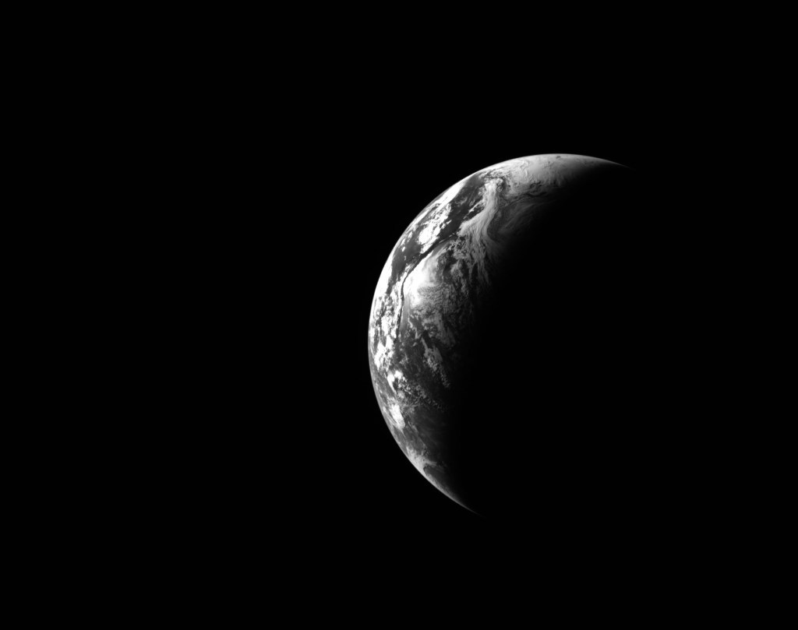

Il ritorno umano verso la Luna ha quattro volti: Reid Wiseman, Victor Glover, Christina Koch e Jeremy Hansen. Nei primi tre casi si tratta di astronauti NASA; Hansen rappresenta la Canadian Space Agency. Wiseman è il comandante, Glover il pilota, Koch e Hansen sono specialisti di missione.
Non sono soltanto passeggeri
Una missione di prova chiede alle persone di usare la nave come un sistema da verificare. Gli astronauti eseguono procedure, osservano apparati e riportano ciò che i soli strumenti non descrivono: accessibilità, leggibilità, carico di lavoro e interazioni fra compiti.
La presenza umana aggiunge una responsabilità diversa. Una funzione può essere interessante da sperimentare e non essere ancora accettabile con un equipaggio. La preparazione deve individuare quali condizioni siano normali, quali richiedano un intervento e quali impongano un ritorno o una rinuncia.
Il lavoro dell’equipaggio
Le prove prima della partenza
Simulazioni, esercitazioni sulle procedure e preparazione alla vita nella capsula costruiscono un linguaggio comune. Gli astronauti devono sapere come lavorano gli altri membri e come cambia il compito quando qualcosa non avviene nella sequenza prevista.
La preparazione geologica ha un ruolo anche in una missione che non scende. Osservare la superficie, capire il contesto di una struttura e descrivere ciò che si vede può fornire informazioni. Il lavoro scientifico non comincia soltanto quando un martello entra nella regolite.
Un equipaggio internazionale nella pratica
La partecipazione canadese collega la missione a una collaborazione di lungo periodo. La bandiera sulla tuta è il simbolo visibile, ma dietro ci sono istituzioni, selezione, formazione e responsabilità. Non ogni paese che aderisce agli Accords ottiene automaticamente un posto su Orion.
L’internazionalità è credibile quando produce interfacce e contributi concreti. Nel caso di Orion, l’equipaggio viaggia sostenuto anche dal modulo di servizio europeo. La missione unisce quindi persone e hardware provenienti da partner differenti.
La distanza ha un effetto umano
Vedere la Terra diventare un oggetto piccolo non è la stessa cosa che parlarne dentro una sala di addestramento. Le immagini della missione danno forma a quell’esperienza. Non occorre inventare pensieri attribuiti agli astronauti per descrivere la forza della situazione.

La nave resta una macchina piena di attività quotidiane, ma fuori dal finestrino cambia il riferimento. Il pianeta che normalmente contiene tutte le destinazioni umane è sullo sfondo. La missione rende reale questa distanza per quattro persone e la rende visibile a moltissime altre.
Per questo il ritorno dell’equipaggio conta più di qualunque primato isolato. La prova completa deve riportare le persone, il lavoro compiuto e le informazioni necessarie a preparare chi verrà dopo.
Fonti pubbliche e tracce
- NASA, Artemis II. Equipaggio e missione conclusa nell’aprile 2026.
- NASA, Artemis II: Image and Video Recap. Fotografie documentarie: crediti distinti per ciascuna immagine.
- NASA, Artemis Accords. Principi di cooperazione, non proprietà della Luna né contratto automatico di volo.